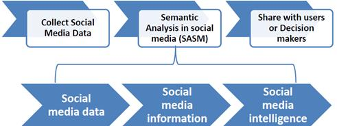
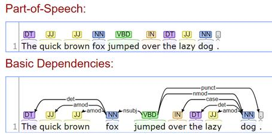
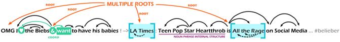
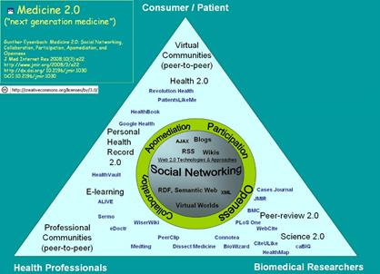
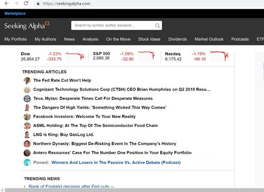
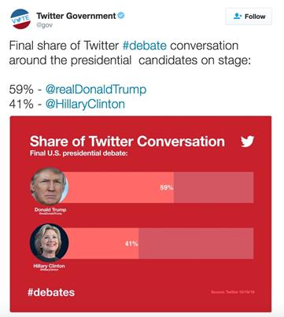
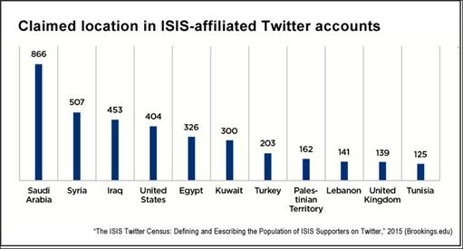
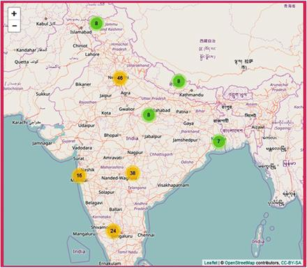
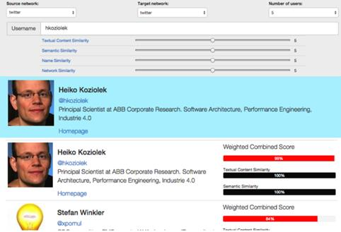
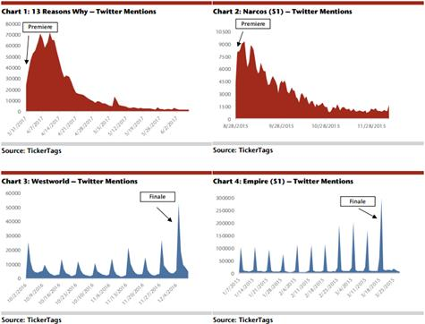

Data publicării: 06.06.2019
Autor articol: Adrian Iftene
Introducere
În ultimii ani am avut o creștere semnificativă a interesului pentru rețelele sociale. Pe deoparte, utilizatorii folosesc aceste rețele pentru a crea și distribui informații textuale (gânduri, opinii, trăiri, etc.), conținut multimedia (imagini, filme, fișiere audio) preluat în vacanță, la concerte, în excursii, la manifestări cu diverse ocazii (nunți, botezuri, aniversări, etc.), la restaurant sau în parcuri, etc. Scopul acestora este de a comunica cu prietenii și familia, de a împărtăși trăiri, sentimente și de a-i implica de la distanță și pe cei ce nu pot fi lângă cei ce postează. Pe de altă parte, cercetătorii au găsit o zonă plină de informații și de resurse pe care le pot exploata și folosi în diverse scopuri, de cele mai multe ori gratuit. De exemplu, este foarte simplu să folosești API-ul de la Twitter pentru a accesa ultimele postări din această rețea. Postările pot fi filtrate în funcție de cuvintele cheie care apar în ele, în funcție de limba postărilor și pot constitui resursa unor aplicații din domeniul medical sau pentru identificare de sentimente.
Semantic Analysis in Social Media (SASM) – analiza semantică din social media – se referă la procesări lingvistice a mesajelor din media socială, pe care le completăm cu informații semantice și meta-date din rețelele sociale (Farzindar și Inkpen, 2015). Vezi Figura 1 de mai jos cum SASM se bazează pe colectarea datelor din rețelele sociale, și cum rezultatele obținute de SASM pot fi folosite de utilizatorii simpli sau de grupurile decizionale ce analizează aceste date.

Proprietățile datelor pe care le putem obține din rețelele sociale (Inkpen, 2017):
- Pot fi obținute într-un mod gratuit (API-ul de la Twitter ne oferă accesul la o parte din datele pe care le dețin în mod gratuit, iar pentru a le accesa pe toate e nevoie să plătești un abonament lunar);
- Sunt informații care sunt postate în timp real în rețeaua socială (imediat după postare, informațiile sunt indexate și sunt oferite ca rezultat în momentul în care îndeplinesc criteriile de căutare);
- Au de multe ori informații geospațiale (trebuie să ținem cont de faptul că în concordanță cu ultimele reguli GDPR, aceste informații nu se mai salvează implicit, dar de multe ori utilizatorii permit folosirea acestor informații, pentru a transmite ușor la ce eveniment se află sau pentru a căuta ușor informații despre locurile din apropiere);
- Au specificate limba în care sunt scrise (acest lucru ne permite să apelăm la unelte de procesare lingvistică specifice limbii postului);
- Au emoticons sau hashtag-uri care ne permit să identificăm rapid sentimentele celui ce a scris postarea sau domeniul postării, ușurându-ne să facem conexiuni cu alte postări anterioare sau cu alte evenimente despre care s-a mai scris;
- Textul care apare scris este nestructurat, fiind scris de persoane neprofesioniste ce folosesc prescurtări, acronime, emoticons, semne de punctuație de multe ori în exces, litere mari, repetiții de litere și cuvinte pentru a sublinia ceva.
În Figura 2 este un exemplu de tweet controversat postat de președintele American Donald Trump.
Preprocesările lingvistice, care se aplică asupra tweet-urilor sunt realizate cu unelte clasice de procesare a limbajului natural, care au fost adaptate la modul de a scrie specific rețelelor sociale. Procesările cele mai folosite pentru procesarea de limbaj natural sunt realizate cu:
- Tokenizator (împarte textul în cuvinte);
- POS Tagger (identifică părțile de vorbire);
- NER (identificatoare și clasificatoare de entități de tip nume);
- Chunk-ere și parsere (care grupează cuvintele între care există legături și extrag informații suplimentare sintactice și semantice);
- Identificatoare de limbă și dialect (când limba postărilor nu este precizată).
Pentru a adapta aceste unelte pentru rețelele sociale e nevoie să se creeze resurse specifice cu date de antrenament preluate din rețelele sociale. În plus pentru procesarea datelor din rețelele sociale este nevoie să se folosească unelte specifice care să trateze caracterul special al postărilor:
- care să elimine duplicatele (litere sau cuvinte),
- să înlocuiască prescurtările cu mulțimea de cuvinte care o reprezintă,
- să înlocuiască scrisul cu litere mari cu scrisul normal,
- dacă e nevoie să înlocuiască chiar emoticon-urile cu cuvintele care reprezintă semnificația acestora.
Unele din uneltele cele mai folosite pentru procesarea limbajului natural sunt:
- Stanford CoreNLP – Natural language software (vezi un exemplu în Figura 3 de mai jos);
- Apache Open NLP;
- Natural Language Toolkit (NLTK);
- GATE;
- FreeLing.

Majoritatea oferă suport și pentru rețelele sociale, iar în plus sunt unelte construite special pentru a procesa informațiile din rețelele sociale:
- TweetNLP (un exemplu este prezentat în Figura 4 de mai jos);
- Twitter NLP Tools.

Aplicații ale exploatării datelor din social media
Aplicațiile ce folosesc date din cadrul rețelelor sociale sunt din ce în ce mai multe și din ce în ce mai diverse. Domeniile de aplicabilitate cuprind domeniul medical, aplicații financiare, prezicerea votului alegătorilor, aplicații pentru domeniul securității, identificarea și acționarea în caz de dezastre sau calamități naturale, realizare de profil utilizator, aplicații pentru divertisment, monitorizare în timp real a datelor din mediul social on-line. În continuare vom vedea mai multe detalii pentru o parte din aceste domenii.
Domeniul medical
Aici sunt incluse platforme specializate sau grupuri pe anumite subiecte în cadrul rețelelor sociale, unde se discută cu argumente pro și contra despre vaccinare, mamografii, efectul pozitiv/negativ al anumitor tratamente, etc. Discuțiile sunt de regulă informale și trebuie avut grijă la datele personale ale utilizatorilor care participă la discuții, pentru a le proteja identitatea (nume, adresă, data nașterii, etc.).
O altă direcție din ce în ce mai exploatată este legată de identificarea într-o fază incipientă a semnelor ce indică boli mentale (depresie, intenții sinucigașe, auto rănire, anorexie, etc.) În cadrul exercițiilor CLEF au fost introduse în ultimii ani exerciții specifice în cadrul laboratorului eRisk, ce au ca scop identificarea unor astfel de riscuri pe Internet. De regulă, organizatorii pun la dispoziția participanților date adnotate cu informații ce conțin informații relevante pentru a identifica un anumit tip de comportament. Pe baza acestor date de antrenament, ce sunt etichetate cu informații utile se cere ca pe o colecție de date de test (cu date neetichetate) să se adauge etichete care să semnaleze comportamentele vizate. Participanții folosesc tehnici din zona inteligenței artificiale, precum învățarea automată, rețele neuronale, deep-learning, etc. În cadrul acestui exercițiu am participat în exercițiul de identificare a anorexiei (Cușmuliuc et al., 2019).
În Figura 5 de mai jos se poate vedea propunerea de modelare a conceptului de Medicină 2.0 din lucrarea (Eysenbach, 2008).

Aplicații financiare
Economia comportamentală studiază corelațiile care se realizează între starea utilizatorilor din rețelele sociale și indicatorii economici, între știrile financiare și fluctuațiile bursiere. În studiile din ultimii ani s-a arătat că datele din rețelele sociale (precum Twitter, Sinaweibo, Seeking Alpha) pot fi folosite cu succes pentru a identifica starea de spirit a utilizatorilor, ce poate fi exploatată mai apoi în aplicațiile financiare. Mai multe experimente au fost făcute cu succes pentru a prezice fluctuațiile pieței pentru NASDAQ, bursele din New York, DOW Jones, S&P 500, Shanghai, bursa turcească, etc.

Prezicerea intenției de vot
În ultimii ani, la alegerile de orice tip, pe lângă luptele electorale clasice, se duc lupte intense și-n cadrul rețelelor sociale, între cei ce-i sprijină pe participanții la vot. După filtrarea postărilor în funcție de subiectul pe care dorim să-l urmărim (ce se realizează de regulă pe bază de cuvinte cheie), avem acces la părerile și opiniile utilizatorilor. Clasificând aceste opinii în opinii pozitive și-n opinii negative, ne putem da seama de susținerea/opoziția pe care o are cineva sau ceva. S-au făcut numeroase studii pe baza datelor strânse cu ocazia alegerilor pentru senat în Olanda (Tjong Kim Sang și Bos, 2012), a alegerilor generale din Irlanda (Bermingham și Smeaton, 2011), a alegerilor din America (Yaquba et al., 2017), etc. Interesant e și studiul realizat de Gayo-Avello în 2013 legat de influența rețelelor sociale în alegerile din diverse zone ale lumii (Gayo-Avello, 2013).
În articolul (Bender, 2017), autoarea arată cum datele din rețelele sociale pot prezice foarte bine ce se va întâmpla la alegeri, iar analiza detaliată a acestor informații trebuie să constituie o prioritate a șefilor de campanie în viitor. În Figura 6 putem vedea cum Donald Trump a condus-o pe Hillary Clinton în dezbaterile de pe Twitter.

Aplicații pentru securitate și apărare
Statisticile despre rețelele sociale sunt impresionante: sunt aproape 3.5 miliarde de utilizatori activi de social media, care produc zilnic doar la nivel de Facebook și Whatsapp în jur de 60 de miliarde de mesaje (textuale, imagini, video, audio, etc.) (Smith, 2019). Volumul datelor fiind atât de mare oamenii pot citi doar o parte a acestor date, iar analiza lor se face în mare parte automat pentru a detecta amenințări criminale la adresa securității și siguranței publice. Odată detectate de aplicațiile software, ce folosesc liste de cuvinte cheie, mesajele sunt citite și analizate de utilizatori umani, care pot decide dacă amenințările sunt reale sau nu. Similar, imaginile sunt analizate automat, fie pe baza cuvintelor cheie asociate și a titlurilor, fie folosind colecții de imagini adnotate. Mai apoi acestea sunt clasificate în imagini ce au conținut terorist sau nu. În Figura 7 putem vedea localizarea utilizatorilor Twitter ce au legături cu gruparea teroristă ISIS (Wihbey, 2015).

Detectarea emoțiilor, mai ales a furiei și a supărării, în postările din social media pot constitui de asemenea alerte pentru posibile mesaje teroriste. Mai ales când intensitatea lor este semnificativă, după cum se arată în studiile din (Ghazi et al., 2010), (Keshtkar și Inkpen, 2012) și (Iftene et al., 2017).
Gestionarea situațiilor de criză
Rețelele sociale beneficiează de reacția rapidă a utilizatorilor indiferent de oră și indiferent de evenimentul semnalat de aceștia. Discuțiile dintre utilizatori dintr-o anumită zonă pe o tematică legată de cutremur, sau de tsunami, sau de incendiu, sau orice altceva, ne poate semnala apariția unui fenomen extrem în acea zonă.
Au fost realizate numeroase experimente despre detectarea evenimentelor pe Twitter: despre dezastre (Imran et al., 2013), despre cutremure (Robinson et al., 2013), despre incendii (Power et al., 2013), despre proteste (Iftene și Gînscă, 2012), etc. Mai jos avem în Figura 8 reprezentarea dezastrelor naturale din India, obținută pe baza numărării de tweet-uri ce semnalează un anumit eveniment (Sangameswar et al., 2017).

Realizarea profilurilor pentru un utilizator
Toate acțiunile utilizatorilor (postările, like-urile, comentariile, căutările, vizionările, etc.) sunt monitorizate, salvate, analizate în cadrul rețelelor sociale și sunt folosite pentru a crea profiluri pentru aceștia. Aceste profiluri sunt accesate în momentul în care ni se oferă reclame la anumite produse, sau când ne sunt sugerate anumite promoții la cazare, sau când sunt evenimente ce se desfășoară fie aproape de noi, fie pe subiecte ce ne interesează, etc. De regulă, unui utilizator i se creează mai multe tipuri de profile: din punct de vedere medical, din punct de vedere gastronomic, din punct de vedere religios, din punct de vedere politic, din punct de vedere al evenimentelor la care participă, din punct de vedere al locațiilor de unde este activ în rețea, etc. Toate acestea contribuie la crearea unei “amprente” unice pentru utilizator. Mai multe detalii despre abordările curente pot fi găsite în proiectul celor de la CeADAR, care are ca scop identificarea unică a unui utilizator în mai multe rețele sociale (vezi Figura 9).

Pentru a-și îmbunătăți calitatea acestor componente, sau pentru a îmbunătăți calitatea informațiilor pe care le deține despre un utilizator sau despre obiectiv, etc., în ultimul timp au început să fie oferite chestionare scurte cu întrebări, pe care utilizatorul le poate completa sau nu.
Aplicații pentru divertisment
Cercetătorii au făcut studii ale activității utilizatorilor din rețelele sociale cu ocazia unor evenimente importante, precum ceremonia de decernare a Oscarurilor, sau finala de la Wimbledon din 2012, dar și relativ la filmele care se difuzează la un moment dat pe Netflix, sau relativ la previziunea audienței unui post de televiziune la un moment dat.
Frecvența postărilor, precum și sentimentele care apar în ele pot fi o măsură a trăirilor pe care le încearcă cei ce asistă la aceste evenimente. Statisticile și graficile realizate pot contribui la identificarea momentelor cheie prin care trec actorii sau jucătorii pe durata derulării evenimentelor. Netflix folosește popularitatea de pe Facebook, pentru a le sugera utilizatorilor un anumit film. De asemenea, o parte din succesul Netflix este pus pe baza atenției pe care o acordă aceștia activităților utilizatorilor lor din social media (Franck, 2017) (vezi Figura 10 de mai jos).

Concluzii
Faptul că rețelele sociale au devenit parte componentă a vieții unui număr foarte mare de oameni, a dus la adaptarea modului în care sunt gândite și construite aplicațiile din ziua de azi. Acestea exploatează informațiile din aceste rețele pentru a vedea părerea utilizatorilor despre un produs, despre o personalitate politică, despre un partid, despre o companie, despre un eveniment, etc. Domeniile de aplicabilitate sunt din ce în ce mai diverse și se prevede ca în viitor aria lor de aplicabilitate să crească și mai mult. Cercetătorii au găsit un loc prielnic de unde își pot colecta foarte ușor informațiile, pe baza cărora își pot construi resurse, ce stau la baza algoritmilor la care lucrează.
Referințe bibliografice
- Bender, B. (2017) Social media and politics: the 2016 US presidential election. BrandBa.Se http://www.brandba.se/blog/social-media-and-politics-2016-election
- Bermingham, A., Smeaton, A. (2011) On Using Twitter to Monitor Political Sentiment and Predict Election Results. In Workshop on Sentiment Analysis where AI meets Psychology, November 13, 2011, Chiang Mai, Thailand.
- Cușmuliuc, C. G., Coca, L. G., Iftene, A. (2019) Early Detection of Signs of Anorexia in Social Media. In 5th Proceedings of the Conference on Mathematical Foundations of Informatics. pp. 245-260. 3-6 July 2019, Iasi, Romania.
- Eysenbach, G. (2008) Medicine 2.0: Social Networking, Collaboration, Participation, Apomediation, and Openness. In JMIR Publications: Medicine 2.0 Theme Issue: Web 2.0 in Health, Health Care, Medicine, and Biomedical Research, vol. 10, no. 3.
- Farzindar, A., Inkpen, D. (2018) Natural Language Processing for Social Media. Second Edition. Edited by Hirst, G. In Morgan & Claypool.
- Franck, T. (2017) A secret to Netflix’s success: Social media. CNBC, US Markets. http://www.cnbc. com/2017/06/28/a-secret-to-netflixs-success-social-media.html
- Gayo-Avello, D. (2013) A meta-analysis of state-of-the-art electoral prediction from Twitter data. In Social Science Computer Review, vol. 31, issue 6, pp. 649-679.
- Ghazi, D., Inkpen, D., Szpakowicz, S. (2010) Hierarchical versus flat classification of emotions in text. In Proceedings of the NAACL HLT 2010 Workshop on Computational approaches to analysis and generation of emotion in text, pp. 140-146, Los Angeles, CA, June 2010.
- Hutchinson, A. (2016) Using Social Media Data to Predict the Result of the 2016 US Presidential Election. Social Media Today. http://www.socialmediatoday.com/technology-data/using- social-media-data-predict-result-2016-us-presidential-election
- Iftene, A., Dudu, M. Ş., Miron, A. R. (2017) Scalable system for opinion mining on Twitter data. Dynamic visualization for data related to refugees’ crisis and to terrorist attacks. In 26th International Conference on Information Systems Development, Larnaca, Cyprus, September 6-8, 2017.
- Iftene, A., Gînscă, A. L. (2012) Using Opinion Mining Techniques for Early Crisis Detection. In International Journal of Computers, Communications & Control. With Emphasis on the Integration of Three Technologies IJCCC. Workshop on Intelligent Decision Support Systems for Crisis Management (ICCCC2012). Agora University Editing House. vol.7, no. 5, pp. 844-851. Oradea, 8-12 May, 2012.
- Imran, M., Elbassuoni, S., Castillo, C., Diaz, F., Meie, P. (2013) Extracting Information Nuggets from DisasterRelated Messages in Social Media. In Proceedings of the 10th International ISCRAM Conference – Baden-Baden, Germany, May 2013, pp. 1-10.
- Inkpen, D. (2017) Natural Language Processing for Social Media. University of Ottawa.
- Keshtkar, F., Inkpen, D. (2012) A hierarchical approach to mood classification in blogs. In Natural Language Engineering, vol. 18, issue 1, pp. 61-81.
- Power, R., Robinson, B., Ratcliffe, D. (2013) Finding Fires with Twitter. In Proceedings of Australasian Language Technology Association Workshop, pp. 80-89.
- Robinson, B., Power, R., Cameron, M. (2013) A sensitive twitter earthquake detector. In Proceedings of the 22nd international conference on World Wide Web companion, pp. 999-1002. International World Wide Web Conferences Steering Committee.
- Sangameswar, M. V., Nagabhushana Rao, M., Satyanarayana, S. (2017) An algorithm for identification of natural disaster affected area. In Journal of Big Data, vol. 4, no. 39. Springer. http://doi.org/10.1186/s40537-017-0096-1
- Smith, K. (2019) 126 Amazing Social Media Statistics and Facts. Brandwatch. Marketing. http://www.brandwatch.com/blog/amazing-social-media-statistics-and-facts/#section-2
- Șerban, C., Alboaie, L., Iftene, A. (2016) Image and user profile-based recommendation system. In Workshop on Social Media and the Web of Linked Data (RUMOUR 2015) at EUROLAN 2015 Summer School on Linguistic Linked Open Data. 18 July 2015, Sibiu, Romania. Springer International Publishing Switzerland. D. Trandabăț and D. Gîfu (Eds.): EUROLAN 2015, CCIS 588, pp. 1-16, 2016. DOI: 10.1007/978-3-319-32942-0_5.
- Tjong Kim Sang, E., Bos, J. (2012) Predicting the 2011 Dutch Senate Election Results with Twitter. In 13th Conference of the European Chapter of the Association for Computational Linguistics, April 23-27, 2012. Avignon, France.
- Yaquba, U., Chun, S. A., Atluri, V., Vaidya, J. (2017) Analysis of political discourse on twitter in the context of the 2016 US presidential elections. In Government Information Quarterly, vol. 34, issue 4, pp. 613-62, Elsevier.
- Wihbey, J. (2015) Social and news media, violent extremism, ISIS and online speech: Research review. Journalist’s Resource. http://journalistsresource.org/studies/society/social-media/social-media-violent-extremism-isis-online-speech-research-review/